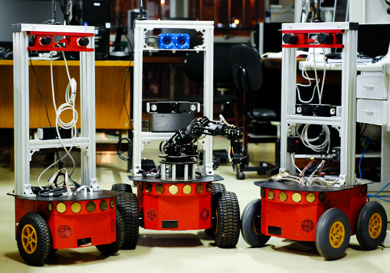

CoopRobo
Robots
Aerial Robots
Mobile Robots
Pioneer
Kinematics
Probabilistic Kinematics
Robots
Computer
Sonars
Cameras
Batteries
GPS Receiver
IMU
ROS
Gazebo Simulator
P2OS Package
Move Base Package
System's Architecture
Mobile Robotics Lab 1
Mobile Robotics Lab 2
Mobile Robotics Lab 3
Manipulators
Documentation
Camera
CoopRobo
Docs
»
Mobile Robots
»
Pioneer
View page source
Pioneer
¶

Modeling
Kinematics
Wheels and its constraints
Differential Drive Model
Kinematic Model
Probabilistic Kinematics
Velocity Motion Model
Odometry Motion Model
Hardware
Robots
Athos
Aramis
Porthos
Computer
Computer Specs
Power Supply
Sonars
Sonar Specs
Geometry
Sensitivity Adjustment
Software
Cameras
Stereo Cameras
Kinect
USB Camera
Batteries
Batteries Specs
Battery Indicators and Low Voltage Conditions
Recharging
GPS Receiver
Specs
Antenna
Power Board
IMU
Specs
Power Board
Software
ROS
Gazebo Simulator
P2OS Package
Move Base Package
System's Architecture
Tutorials:
Mobile Robotics Lab 1
Mobile Robotics Lab 2
Mobile Robotics Lab 3